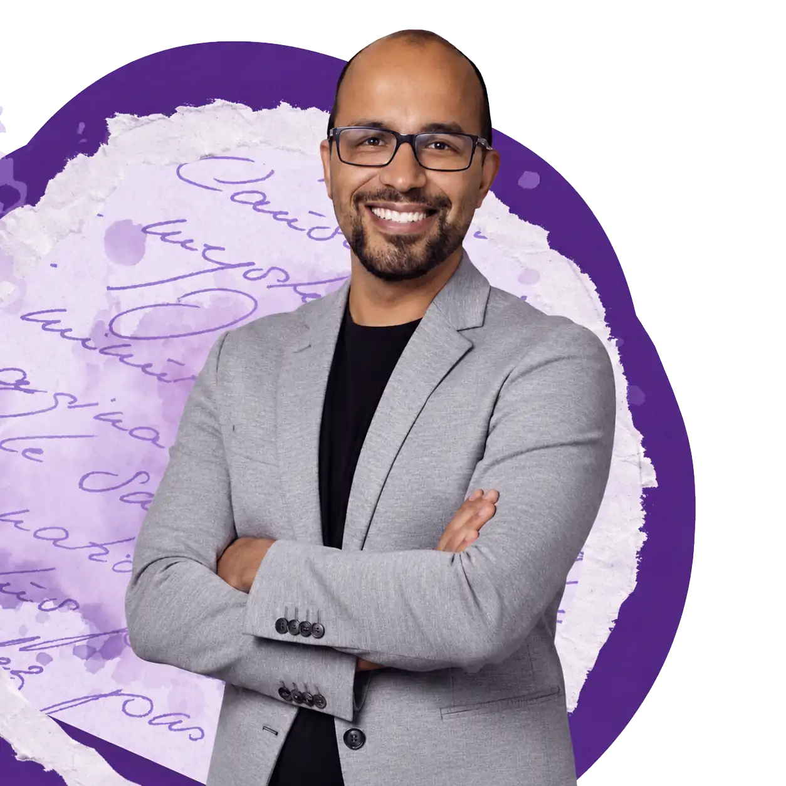
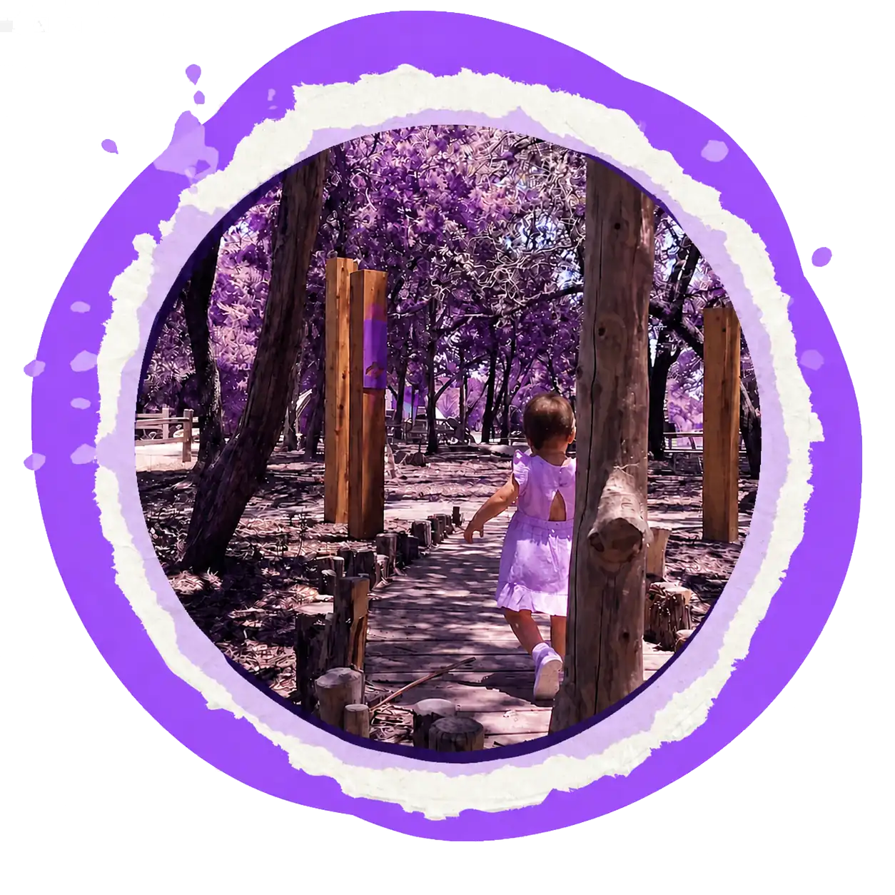
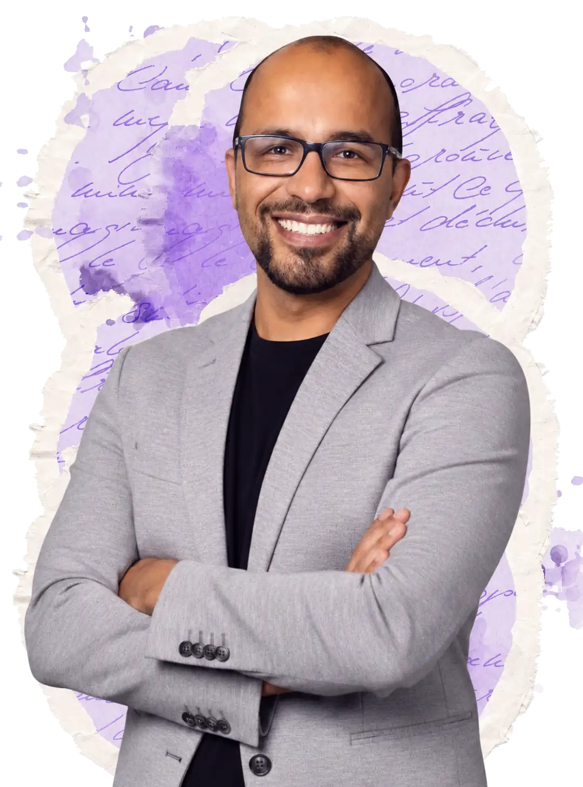
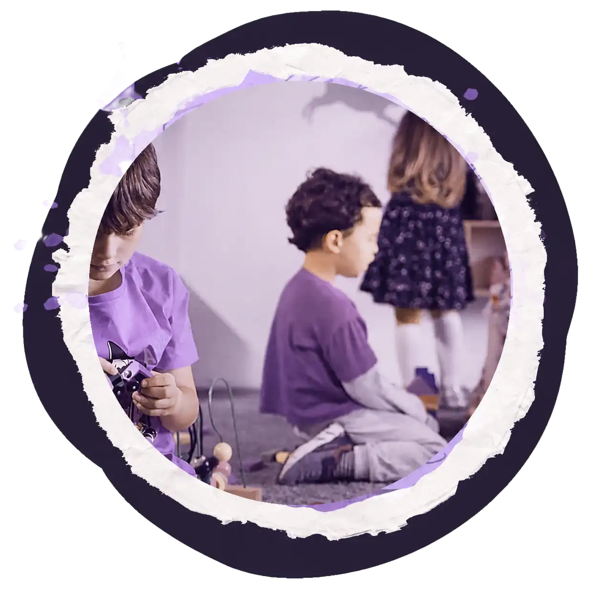
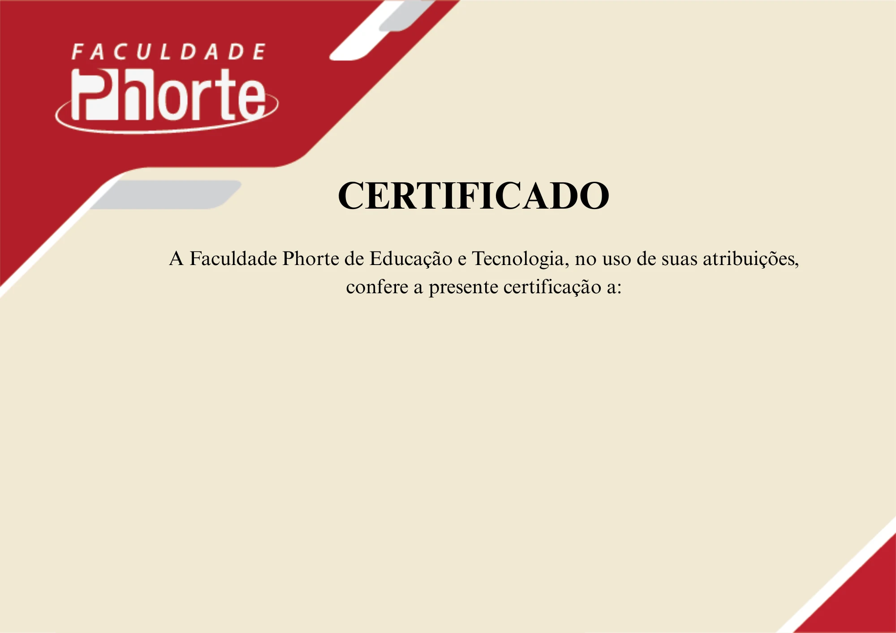

LIVE EDUCAÇÃO · 26/08 ÀS 19H30
Registrei. E agora?
Como o registro transforma a prática pedagógica
Ressignifique o registro pedagógico para orientar escolhas, construir percursos e ampliar possibilidades de aprendizagem, com foco em reconhecer o cotidiano documentado como ponto de partida para a tomada de decisões.
Com o Prof. Dr. Cristiano Alcântara · Pelo YouTube · Com certificado
Quero participar da live& reflexão

Uma conversa para transformar observação em decisão pedagógica.
Inscrição gratuita
Garanta seu lugar na conversa.
Para participar, preencha o formulário e receba as informações da live e do certificado.
01 · Sobre a live
O registro não é o produto final da documentação pedagógica.
Quando o transforma em objeto de reflexão, o pedagogo encontra fundamentos para orientar práticas alinhadas às necessidades reais da sala de aula.
Ao revisitar suas observações, o professor identifica lacunas e caminhos de continuidade. Essa análise torna o planejamento mais coerente e aproxima as decisões do que os alunos vivem, expressam e aprendem.
Entenda como seus registros podem sustentar mudanças reais na prática pedagógica em uma transmissão ao vivo com um coordenador que vivencia a documentação no cotidiano escolar. Aproveite o encontro para fazer perguntas, compartilhar experiências e ampliar suas referências.


02 · Quem conduz
Prof. Dr. Cristiano Alcântara
Pós-Doutor em Psicologia da Educação, Doutor em Língua Portuguesa, Mestre em Ciência da Informação e Documentação, Bacharel em Letras — Português e Literaturas de Língua Portuguesa e Pedagogo em Gestão Escolar.
Especialista em PROEJA, Letramento e Alfabetização e Supervisão Escolar. Atualmente é Coordenador Pedagógico na Cidade de São Paulo e Coordenador dos cursos de graduação em Pedagogia e das pós-graduações em Educação Infantil numa Perspectiva Pikleriana e Registro e Documentação Pedagógica da Faculdade Phorte. Suas principais áreas de atuação são formação de professores, assessoramento pedagógico e gestão escolar.
Inscreva-se gratuitamente
03 · Para quem é
Para profissionais que documentam para transformar.
Esta live é voltada para professores da Educação Infantil e dos anos iniciais do Ensino Fundamental que lidam com exigências institucionais e curriculares, como a BNCC e as diretrizes curriculares, sobre o registro e a documentação pedagógica.
Também se dirige a coordenadores pedagógicos, responsáveis pela leitura e pela devolutiva dos registros produzidos por esses professores, que buscam critérios mais claros para acompanhar práticas, orientar o trabalho docente e dar sentido formativo a esse material.
04 · Ao final
Live com certificado.
Além de dialogar ao vivo com um professor que reúne experiência em formação docente e documentação pedagógica, você garante um certificado de participação.
Quero participar